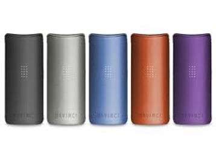

Your Community
DAVINCI MIQRO
he DaVinci MIQRO is a portable vaporizer unlike any other. Placing the innovative technology of its bigger brother, the IQ, into a 31% smaller design, the MIQRO places powerful vapor production in your palm. This pocket-friendly work of art features 4 advanced Smart Path™ heat settings, each offering a unique range of flavors, aromas, and effects. Transition to precision temperature to turn the dry herb you have into the vapor you want. The MIQRO preserves vapor purity with a 100% ceramic zirconia vapor path, delivering smooth, flavor-rich hits. An adjustable ceramic oven allows you to alter bowl size by up to 50%, delivering maximum vapor quality even with smaller loads. The DaVinci MIQRO makes vaping smarter, easier, and more delightful.
EXPLORE WITH SMART PATH
Designed for connoisseurs by connoisseurs, the DaVinci MIQRO enables you to explore previously unknown vapor profiles with 4 Smart Path heat settings. Each Smart Path spans a range of 20 degrees, gradually climbing from the lowest to highest temperature over the course of your session. As temperature increases, new flavors and effects are released, achieving a complex, ever-changing vapor profile. Experiment with different flavor and potency levels with a few clicks. There's a Smart Path for every experience, from euphoria and creativity to calmness and sleep. For rapid hits, toggle to Power Boost mode. The DaVinci MIQRO also boasts the most precise heating available, allowing you to enjoy vapor how you want, when you want.
CERAMIC ZIRCONIA AIRPATH
Engineered for optimal flavor extraction, the DaVinci MIQRO features a ceramic zirconia vapor path for conserving the utmost purity. This high-grade material is extremely resistant to heat, ensuring that essential flavors are maintained from heating chamber to mouthpiece. A ceramic oven extracts intense flavor notes with zero combustion, generating smooth, delicious vapor. Rugged and reliable, the MIQRO's vapor path promises premium performance. The bowl size can be adjusted to accommodate the amount of material used each session. For the thickest vapor, we recommend firmly packing the bowl with finely ground herb.
SMALLER & SMARTER
With a 31% more pocket-friendly design, the DaVinci MIQRO proves that good things come in small packages. Easily concealed in your palm or pocket, this 3" tall device offers power that's anything but mini. The compact and lightweight MIQRO features an anodized aluminum casing for an elegant, ergonomic, and rugged feel. A replaceable 18350 battery boasts 1.5-2 hours of continuous use, charging conveniently via USB. An adjustable bowl size delivers excellent vapor production, no matter how little dry herb is loaded. With 71 positive affirmations displayed when the device is off, the DaVinci MIQRO is a personal guru cleverly disguised as a portable vaporizer. The DaVinci MIQRO lets you carry powerful vapor production wherever life leads you.